Programação Web
(Report)
O endereço IP do computador foi obtido através da pesquisa pelo google "what is my ip".
Depois desse processo utilizou-se o site da whatismyipaddress.com para obter um mapa
dessa localização.
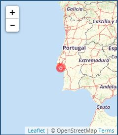 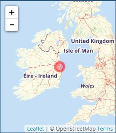Endereço Computador
Endereço Heroku
Neste passo, é usado a ferramenta Traceroute para fazer o rastreio dos pacotes IP até ao
destino. Esse processo nao foi totalmente feito por causa da firewall, que protege o server
não deixando passar os protocolos.
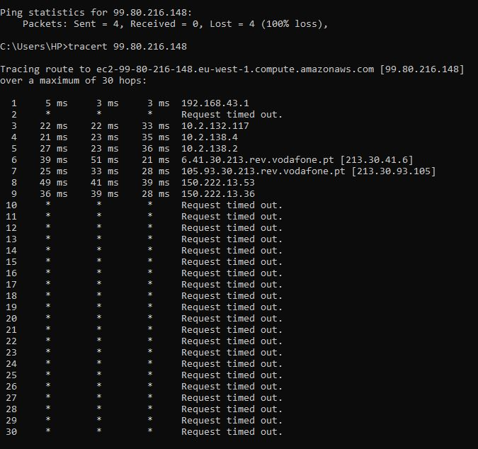Comando Trace
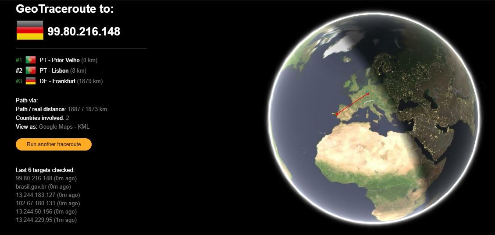Utilizando a ferramenta (browser developer tool) e selecionando a barra "Network", vemos
que ele regista a atividade da rede enquanto está aberta. Cada registo representa um
recurso que é ordenado cronologicamente (lab1emheroku e wordcloud).
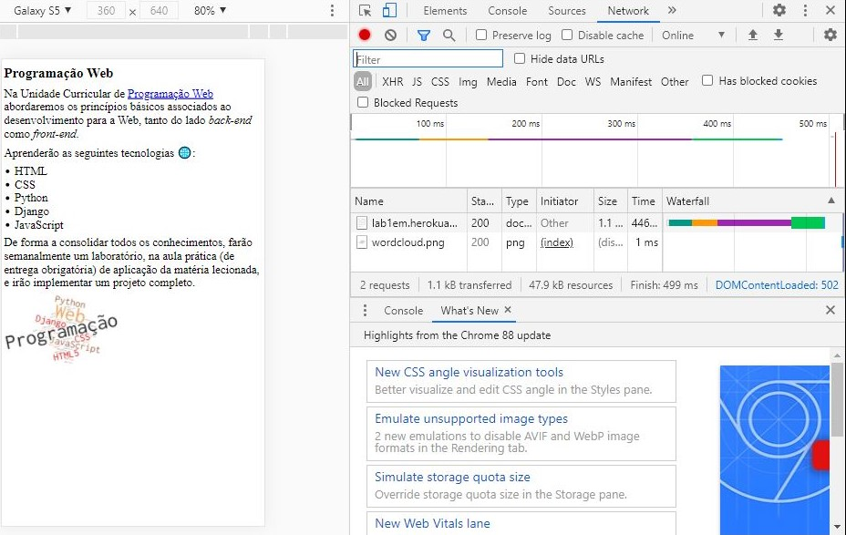Ao selecionar o ficheiro descarregado temos a opção dos Headers que analisa os dados
dos Headers e a fonte.
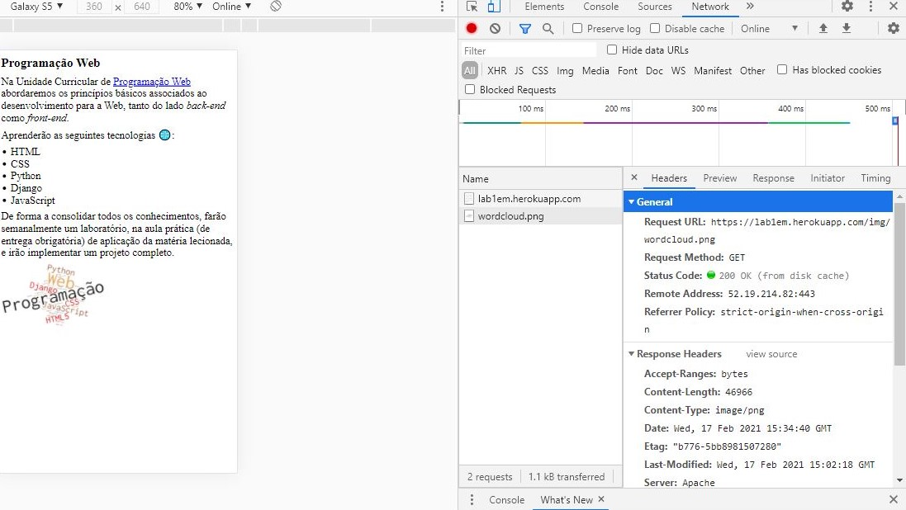O Preview serve para ver os recursos
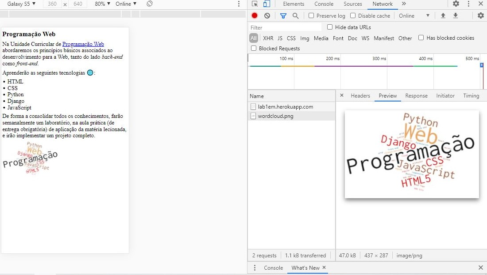E o Timing é quanto tempo demorou a responder.
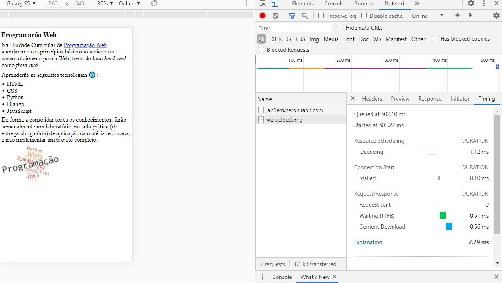O mesmo acontece para o site da lusófona
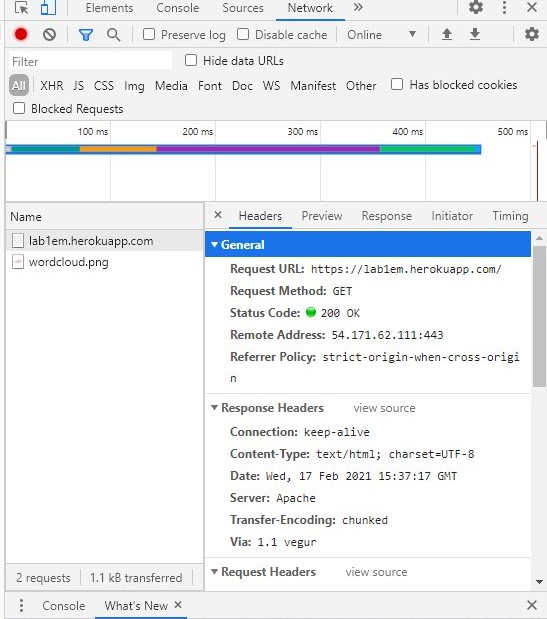 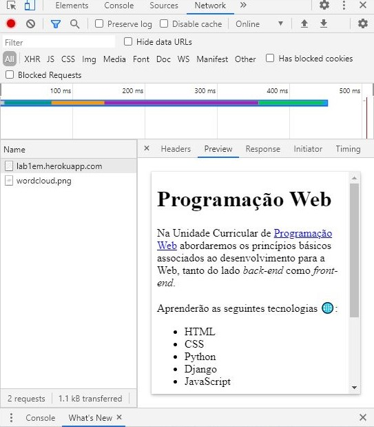 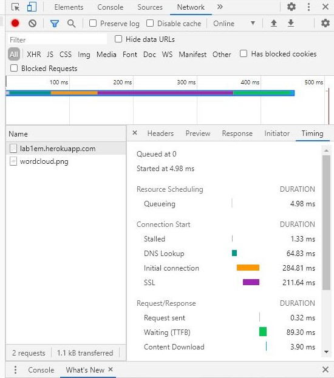Criação da página Web